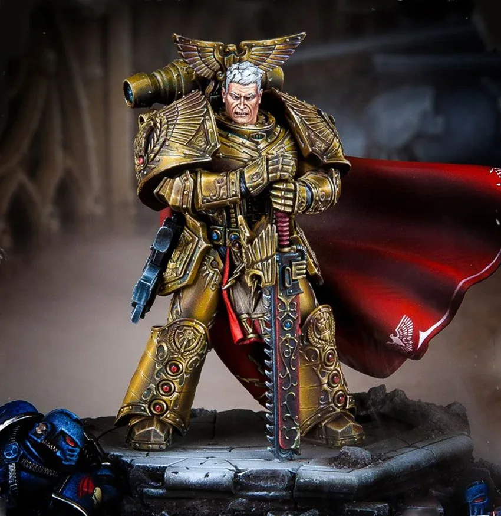
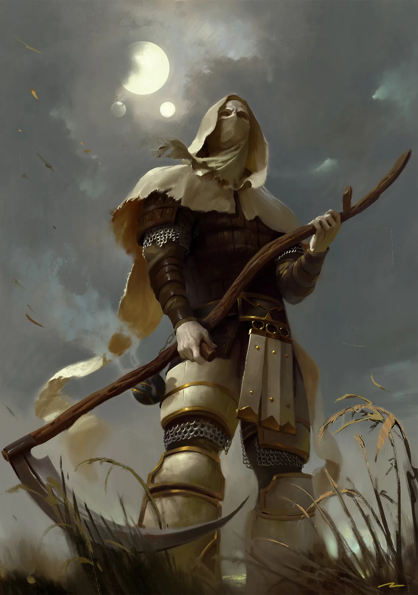

The Emperor of Mankind (ดิ เอ็มเพอเรอร์ ออฟ แมนไคนด์ — จักรพรรดิแห่งมนุษยชาติ)


ผู้สร้าง Primarch และ Space Marines ผู้ก่อตั้งจักรวรรดิแห่งมนุษยชาติ และเป็นศูนย์กลางของเรื่องราวทั้งหมดในจักรวาล 40K — ทั้งเป็นวีรบุรุษ ผู้เผด็จการ และ (ในสายตาผู้คนยุคปัจจุบัน) พระเจ้า
กำเนิด
ตามบันทึกหนึ่ง พระองค์เกิดในหมู่บ้านยุคหินใหม่ริมแม่น้ำใน Anatolia (ตุรกีปัจจุบัน) เป็น Perpetual — มนุษย์กลายพันธุ์ที่ไม่มีวันตาย และเป็นผู้มีพลังจิตที่แข็งแกร่งที่สุดที่มนุษย์เคยให้กำเนิด ตำนานเล่าว่าวิญญาณของเหล่าหมอผีมนุษย์ยุคโบราณยอมตายพร้อมกันเพื่อมาเกิดเป็น 'มนุษย์คนใหม่' คนเดียว (ปัจจุบันเรื่องนี้ถูกมองว่าเป็นเพียงตำนาน — ต้นกำเนิดที่แท้จริงยังเป็นปริศนา)
บทเรียนแรก
เมื่อพ่อถูกลุงฆ่า เด็กชายเห็นนิมิตความจริง แล้วใช้พลังจิตหยุดหัวใจของลุงอย่างเยือกเย็น พระองค์เล่าว่านั่นคือวันที่ตระหนักว่ามนุษย์ต้องการกฎหมาย ระเบียบ และผู้ปกครองที่ฉลาด
ผู้เฝ้ามองประวัติศาสตร์
พระองค์ใช้ชีวิตแฝงตัวในประวัติศาสตร์มนุษย์ในหลายร่าง — ที่ปรึกษากษัตริย์ นักวิทยาศาสตร์ ผู้นำ พยายามชี้นำมนุษยชาติอย่างลับ ๆ และตระหนักว่าด้านมืดของมนุษย์กำลังเลี้ยงดูเทพแห่ง Chaos ให้เติบโต
การต่อรองที่ Molech
พระองค์และ Perpetual คนอื่นเดินทางไปดาว Molech เข้าสู่ประตู Warp แล้วต่อรองกับเทพแห่ง Chaos เพื่อแลกความรู้ที่ใช้สร้าง Primarch — เทพ Chaos จึงถือว่าพระองค์ติดหนี้พวกมัน
Unification Wars
ปรากฏตัวอย่างเปิดเผยในยุคมืด (Age of Strife) พิชิตแคว้นต่าง ๆ บน Terra ด้วย Thunder Warriors แล้วสร้าง Primarch 20 คนและ Space Marines
ก่อตั้ง Imperium
ทำสนธิสัญญากับดาวอังคาร (Treaty of Mars / Olympus) ร่วมกับ Mechanicum ก่อตั้งจักรวรรดิแห่งมนุษยชาติ
Great Crusade
นำกองทัพพิชิตกาแล็กซี ประกาศ Imperial Truth 'ข้าไม่ใช่พระเจ้า' และห้ามการบูชาทุกรูปแบบ ระหว่างทางตามหา Primarch จนพบ 18 คน
โครงการลับ Webway
มอบตำแหน่ง Warmaster ให้ Horus แล้วกลับ Terra เพื่อใช้ Golden Throne (สิ่งประดิษฐ์ยุคโบราณ) สร้างเส้นทาง Webway ของมนุษย์ เพื่อให้มนุษย์เดินทางได้โดยไม่ต้องผ่าน Warp — แต่ไม่ได้บอกเหตุผลกับลูก ๆ ทำให้เกิดความขุ่นเคือง
Horus Heresy
Magnus ทะลวงเกราะพลังจิตของพระราชวังทำให้โครงการ Webway พัง ปีศาจทะลักเข้ามา จักรพรรดิต้องนั่งบนบัลลังก์เพื่อกั้นไว้ ขณะที่ Horus ปิดล้อม Terra ในวันสุดท้ายพระองค์ขึ้นยานของ Horus สังหารเขาและทำลายวิญญาณจนสิ้น แต่ตัวเองบาดเจ็บปางตาย
ขึ้นบัลลังก์ทองคำ
Rogal Dorn นำร่างของพระองค์ไปผนึกบน Golden Throne ตามพระประสงค์ — ร่างกายแทบเป็นศพ แต่จิตยังขยายไปทั่ว Warp
God-Emperor
ศาสนา Imperial Creed ยกพระองค์เป็นพระเจ้า — สิ่งที่พระองค์เคยห้ามมาตลอด แต่ความศรัทธาของมนุษย์นับล้านล้านทำให้จิตของพระองค์ใน Warp ทรงพลังเทียบเท่าเทพ Chaos พระองค์ขับเคลื่อน Astronomican ที่ต้องใช้ชีวิตผู้มีพลังจิตราว 1,000 คนต่อวัน
สถานะล่าสุด
Guilliman ที่ฟื้นคืนชีพได้เข้าพบพระองค์เป็นครั้งแรกในรอบหมื่นปี (ไม่มีใครรู้ว่าคุยอะไรกัน) และออกมาเป็นผู้สำเร็จราชการ ขณะเดียวกัน Adeptus Mechanicus รายงานว่าระบบค้ำชีวิตของ Golden Throne เริ่มเสื่อมและซ่อมไม่ได้แล้ว — หากบัลลังก์ล้มเหลว จักรพรรดิจะสิ้นพระชนม์ และมนุษยชาติจะเหลือตัวคนเดียวในความมืด
Warhammer จงใจเล่าเรื่องจักรพรรดิแบบคลุมเครือ — ข้อมูลหลายอย่างมาจากตำนาน บันทึกที่ขัดแย้งกัน และมุมมองของตัวละคร ต้นกำเนิดแบบ 'หมอผีมาเกิดรวมกัน' เคยเป็นเนื้อเรื่องหลักแต่ปัจจุบันถูกมองว่าไม่แน่นอน
00Primarch คือใคร?
Primarch (ไพรมาร์ค) คือ "ลูกชาย" 20 คนที่จักรพรรดิสร้างขึ้นจากพันธุกรรมของพระองค์เอง ผสมกับศาสตร์พลังจิต แต่ละคนสูงราว 3–4 เมตร ฉลาดเป็นอัจฉริยะ และมีเสน่ห์ดึงดูดผู้คน พวกเขาถูกสร้างให้เป็นแม่ทัพของ Great Crusade (เกรท ครูเสด) แต่ก่อนจะคลอด เทพแห่ง Chaos ได้พัดพาแคปซูลทั้ง 20 กระจายไปตกบนดาวต่าง ๆ ทั่วกาแล็กซี (ราว 792.M30)
จักรพรรดิจึงสร้าง Space Marines จากพันธุกรรมของพวกเขาไปก่อน แบ่งเป็น 20 Legion แล้วออกตามหาลูก ๆ ทีละคนระหว่างพิชิตกาแล็กซี เมื่อพบแล้ว Primarch แต่ละคนจะได้นำ Legion ที่สร้างจากยีนของตัวเอง นิสัยของ Primarch จึงสะท้อนออกมาในทหารทุกคนของ Legion นั้น
ทุกคนมีจุดอ่อนแบบมนุษย์ — ความอิจฉา ความภาคภูมิ ความแค้น ความรู้สึกไม่ได้รับการยอมรับ และบางคนถูก Chaos สัมผัสตั้งแต่ยังเป็นทารก เมื่อ Horus ผู้เป็นพี่คนโตตกเป็นของ Chaos เขาจึงใช้จุดอ่อนของพี่น้องแต่ละคนดึงมาเป็นพวก ผลคือ 9 จาก 18 คนเลือกทรยศ

01ตารางสรุปทั้ง 20 คน
| # | Primarch | Legion | ดาว | ฝ่าย | สถานะ | ประวัติ |
|---|---|---|---|---|---|---|
| I | Dark Angels | Caliban | ภักดี | มีชีวิต | รายละเอียด | |
| II | Legion ที่ II | ไม่ทราบ | — | ถูกลบจากบันทึก | รายละเอียด | |
| III | Emperor's Children | Chemos | ทรยศ | Daemon Primarch ของ Slaanesh | รายละเอียด | |
| IV | Iron Warriors | Olympia | ทรยศ | Daemon Primarch | รายละเอียด | |
| V | White Scars | Chogoris (Mundus Planus) | ภักดี | สาบสูญในเว็บเวย์ | รายละเอียด | |
| VI | Space Wolves | Fenris | ภักดี | สาบสูญ | รายละเอียด | |
| VII | Imperial Fists | Inwit | ภักดี | เสียชีวิต (ตามบันทึก) | รายละเอียด | |
| VIII | Night Lords | Nostramo | ทรยศ | เสียชีวิต | รายละเอียด | |
| IX | Blood Angels | Baal | ภักดี | เสียชีวิต | รายละเอียด | |
| X | Iron Hands | Medusa | ภักดี | เสียชีวิต | รายละเอียด | |
| XI | Legion ที่ XI | ไม่ทราบ | — | ถูกลบจากบันทึก | รายละเอียด | |
| XII | World Eaters (เดิม War Hounds) | Nuceria | ทรยศ | Daemon Primarch ของ Khorne | รายละเอียด | |
| XIII | Ultramarines | Macragge | ภักดี | มีชีวิต | รายละเอียด | |
| XIV | Death Guard (เดิม Dusk Raiders) | Barbarus | ทรยศ | Daemon Primarch ของ Nurgle | รายละเอียด | |
| XV | Thousand Sons | Prospero | ทรยศ | Daemon Primarch ของ Tzeentch | รายละเอียด | |
| XVI | Luna Wolves → Sons of Horus → Black Legion | Cthonia | ทรยศ | เสียชีวิต | รายละเอียด | |
| XVII | Word Bearers (เดิม Imperial Heralds) | Colchis | ทรยศ | Daemon Primarch ของ Chaos Undivided | รายละเอียด | |
| XVIII | Salamanders | Nocturne | ภักดี | สาบสูญ | รายละเอียด | |
| XIX | Raven Guard | Lycaeus (ต่อมาชื่อ Deliverance) | ภักดี | สาบสูญ | รายละเอียด | |
| XX | Alpha Legion | ไม่ทราบ | ทรยศ | ไม่แน่ชัด | รายละเอียด |
ลำดับที่จักรพรรดิค้นพบ (ปี .M30)
- Horus (801)
- Leman Russ (819)
- [II] ปกปิด
- Ferrus Manus (824)
- Fulgrim (830)
- Vulkan (832)
- Rogal Dorn (835)
- Roboute Guilliman (837)
- Magnus (840)
- Sanguinius (843)
- Lion El'Jonson (846)
- Perturabo (849)
- Mortarion (854)
- Lorgar (857)
- Jaghatai Khan (865)
- Konrad Curze (896)
- Angron (899)
- Corvus Corax (922)
- [XI] ปกปิด
- Alpharius Omegon (981)
ลำดับอ้างอิงตามรายการที่ Black Library เผยแพร่ (สรุปในหน้า Primarch ของ Warhammer 40k Wiki) · ปีคือปีที่จักรพรรดิพบตัว ไม่ใช่ปีที่รับตำแหน่งผู้นำ Legion
ILion El'Jonson (ไลออน เอล'จอนสัน)


ต้นกำเนิด — ก่อนพบจักรพรรดิ
แคปซูลของไลออนตกลงในป่าทึบของดาว Caliban ดาวที่เต็มไปด้วยสัตว์ร้ายกลายพันธุ์ที่เรียกว่า Great Beasts เด็กป่าคนนี้เอาชีวิตรอดเพียงลำพังจนอัศวินของคณะ The Order นำโดย Luther พบตัวและรับไปเลี้ยง ไลออนเติบโตเป็นอัศวินที่เก่งที่สุด นำสงครามครูเสดกวาดล้าง Great Beasts จนหมดดาว และได้เป็นแกรนด์มาสเตอร์ของ The Order โดยมี Luther เป็นมือขวา
พบจักรพรรดิเมื่อไหร่ อย่างไร
จักรพรรดิมาถึง Caliban ในปี 846.M30 ไลออนยอมรับพระองค์เป็นบิดาและรับตำแหน่งผู้นำ Legion ที่ 1 — Dark Angels ซึ่งเป็น Legion แรกที่ถูกสร้าง เขาพานักรบชาว Caliban เข้าร่วม Legion ด้วย ต่อมาไลออนส่ง Luther กลับไปเฝ้า Caliban ซึ่งทำให้ Luther ขมขื่นและอิจฉาอย่างลึก ๆ
ทำไมถึงภักดี / ทรยศ
ภักดี — ไลออนเป็นทหารและนักล่าที่ยึดหน้าที่เหนือทุกสิ่ง ระหว่าง Heresy เขาสู้กับ Night Lords ใน Thramas Crusade เคยดวลกับ Konrad Curze และช่วยปกครอง Imperium Secundus ร่วมกับกิลลิมันและแซงกวิเนียส
ชะตากรรมหลังสงคราม
หลังสงคราม ไลออนกลับถึง Caliban และพบว่า Luther กับทหารที่เฝ้าดาว (ภายหลังเรียกว่า Fallen Angels) ก่อกบฏเข้ากับ Chaos การต่อสู้ทำให้ Caliban แหลกสลายเหลือแค่ป้อม The Rock ไลออนหายตัวไป — ที่จริงเขาหลับใหลอยู่ใจกลาง The Rock โดยมีสิ่งมีชีวิตลึกลับ Watchers in the Dark เฝ้าไว้นานหนึ่งหมื่นปี
สถานะปัจจุบัน (Era Indomitus)
ตื่นขึ้นแล้วในยุค Era Indomitus ช่วงเหตุการณ์ Arks of Omen เดินทางผ่าน Warp ปรากฏตัวพร้อมหมอกป่าบนดาวต่าง ๆ ช่วยเหลือผู้คน เคยช่วยชีวิต Dante แห่ง Blood Angels ด้วยการเอาชนะและส่ง Angron กลับเข้า Warp ปัจจุบันนำเขตคุ้มครองที่เรียกว่า Lion's Protectorate ใน Imperium Nihilus
IIถูกลบจากบันทึก (Primarch ที่ 2)
ต้นกำเนิด — ก่อนพบจักรพรรดิ
ไม่มีข้อมูลใด ๆ ในบันทึกของจักรวรรดิ ชื่อ ดาวบ้านเกิด และ Legion ของ Primarch คนที่สองถูกลบทิ้งทั้งหมด
พบจักรพรรดิเมื่อไหร่ อย่างไร
ในพระราชวังจักรพรรดิมีแท่นรูปปั้นของ Primarch ครบ 20 แท่น แต่แท่นที่ II และ XI ว่างเปล่า Rogal Dorn เคยกล่าวว่าไม่มีใครพูดถึงพี่น้องสองคนนี้
ทำไมถึงภักดี / ทรยศ
ไม่มีใครรู้ว่าเกิดอะไรขึ้น — บางตำนานบอกว่า Horus และ Fulgrim ต่างสาบานว่าจะไม่พูดถึงสองคนนี้อีก
ชะตากรรมหลังสงคราม
ทหารของ Legion ที่ II และ XI อาจถูกแยกย้ายไปรวมกับ Legion อื่น (มีข่าวลือว่ายอดรับสมาชิกของ Ultramarines เพิ่มขึ้นผิดปกติในช่วงนั้น)
สถานะปัจจุบัน (Era Indomitus)
ยังเป็นปริศนาที่ Games Workshop จงใจไม่เฉลย
IIIFulgrim (ฟูลกริม)


ต้นกำเนิด — ก่อนพบจักรพรรดิ
ฟูลกริมเติบโตบนดาว Chemos ดาวเหมืองที่แห้งแล้งและเป็นพิษ ผู้คนทำงานในโรงงานเพื่อความอยู่รอดจนไม่มีเวลาให้ศิลปะหรือความสุข เด็กผมขาวคนนี้เรียนรู้เร็วอย่างน่าทึ่ง ขึ้นเป็นผู้นำและพลิกฟื้น Chemos ให้เจริญรุ่งเรือง จนได้ฉายา The Phoenician (ผู้ฟื้นจากเถ้าถ่านดั่งนกฟีนิกซ์)
พบจักรพรรดิเมื่อไหร่ อย่างไร
จักรพรรดิมาถึงในปี 830.M30 และมอบ Legion ที่ 3 ให้ ขณะนั้น Legion เกือบสูญพันธุ์เพราะเจเนซีดเสื่อม เหลือทหารเพียงราว 200 นาย ยีนของฟูลกริมช่วยชุบชีวิต Legion ขึ้นมาใหม่ Legion นี้ได้เกียรติสูงสุดให้ใช้ชื่อ Emperor's Children และสัญลักษณ์นกอินทรีของจักรพรรดิ ฟูลกริมยังเป็นเพื่อนสนิทที่สุดของ Ferrus Manus
ทำไมถึงภักดี / ทรยศ
ทรยศ — ความหมกมุ่นกับ 'ความสมบูรณ์แบบ' คือจุดอ่อน ในการบุกดาว Laeran ฟูลกริมได้ดาบที่มีปีศาจของ Slaanesh สิงอยู่ ดาบค่อย ๆ กัดกินจิตใจ เมื่อ Horus ชวนก่อกบฏเขาจึงตอบรับ เขาพยายามชวน Ferrus Manus แต่ล้มเหลว
ชะตากรรมหลังสงคราม
ที่ Isstvan V ฟูลกริมตัดศีรษะ Ferrus Manus เพื่อนรักด้วยมือตัวเอง จากนั้นปีศาจในดาบเข้ายึดร่างเขาชั่วคราว ก่อนเขาจะแย่งร่างคืนและยอมถวายตัวให้ Slaanesh กลายเป็น Daemon Prince หลังสงคราม เขาเกือบฆ่า Roboute Guilliman ที่ Thessala (121.M31) ด้วยมีดพิษ ทำให้กิลลิมันต้องอยู่ในสภาพไม่ตายไม่เป็นนานหมื่นปี
สถานะปัจจุบัน (Era Indomitus)
ยุค Era Indomitus ฟูลกริมยุติการเก็บตัวบนดาวปีศาจ Callax รวม Emperor's Children ออกทำสงครามอีกครั้งโดยหมายจะไป Terra เพื่ออ้างตัวเป็นทายาทที่สมบูรณ์แบบของจักรพรรดิ เขาบุกยึดดาว Crucible และสังหาร Black Templars ที่ปกป้องดาวจนหมด
IVPerturabo (เพอร์ทูราโบ)


ต้นกำเนิด — ก่อนพบจักรพรรดิ
Perturabo ถูกพบบนดาว Olympia ดาวภูเขาที่แบ่งเป็นนครรัฐ Dammekos ทรราชแห่งนคร Lochos รับเขาเป็นบุตรบุญธรรม เด็กอัจฉริยะคนนี้เชี่ยวชาญคณิตศาสตร์ ปรัชญา และวิศวกรรม ออกแบบเครื่องจักรสงครามจนนครของบิดาพิชิต Olympia ได้ทั้งดาว
พบจักรพรรดิเมื่อไหร่ อย่างไร
จักรพรรดิมาถึงในปี 849.M30 Perturabo รับตำแหน่งผู้นำ Iron Warriors แต่ Legion ถูกใช้ทำงานที่ไม่มีใครอยากทำ — ปิดล้อมป้อม เฝ้าประจำการ และแบ่งกำลังออกไปกระจายทั่วกาแล็กซี งานหนักแต่ไม่เคยได้รับคำชม เขายิ่งขมขื่นเมื่อ Rogal Dorn คู่แข่งได้รับเกียรติมากกว่า
ทำไมถึงภักดี / ทรยศ
ทรยศ — เมื่อ Olympia ลุกฮือต่อต้านเขา Perturabo ปราบปรามอย่างโหดร้ายจนประชากรแทบหมดดาว ด้วยความกลัวการลงโทษจากจักรพรรดิและความแค้นที่สะสม เขาจึงเข้าร่วมกับ Horus และเข้าร่วมการสังหารหมู่ที่ Isstvan V
ชะตากรรมหลังสงคราม
หลังสงคราม เขาวางกับดัก 'Iron Cage' ขังและบดขยี้ Imperial Fists ของ Rogal Dorn จนเกือบสิ้นชาติ ก่อนหนีเข้า Eye of Terror ไปสร้างดาวปีศาจ Medrengard และได้รับการยกเป็น Daemon Prince ของ Chaos Undivided
สถานะปัจจุบัน (Era Indomitus)
หลังการเกิด Great Rift Perturabo กลับสู่สนามรบด้วยตัวเองเป็นครั้งแรกในรอบหลายพันปี เริ่มแผน Infinite Citadel — เปลี่ยนดาวทีละดวงให้เป็นป้อมปราการ แล้วค่อย ๆ รุกคืบเข้าหา Terra แบบสงครามปิดล้อมทั้งกาแล็กซี
VJaghatai Khan (จาคาไต ข่าน)


ต้นกำเนิด — ก่อนพบจักรพรรดิ
เขาตกลงบนทุ่งหญ้ากว้างใหญ่ของ Chogoris Ong Khan หัวหน้าเผ่าเร่ร่อนขี่ม้าเล็ก ๆ ชื่อ Talaskar รับเลี้ยงเป็นลูก เมื่อพ่อบุญธรรมถูกเผ่าคู่แค้นสังหาร จาคาไตนำนักรบไปแก้แค้น จากนั้นรวมเผ่าต่าง ๆ เป็นสหพันธ์ ตีทัพของจักรวรรดิ Palatine ที่กดขี่จนแตกพ่าย ได้รับยกเป็น Khagan (ข่านแห่งข่านทั้งปวง) และพิชิตทั้งดาวภายในราว 20 ปี
พบจักรพรรดิเมื่อไหร่ อย่างไร
เพียงไม่ถึงหกเดือนหลังเขาพิชิตดาวสำเร็จ จักรพรรดิมาถึงพร้อม Horus ในปี 865.M30 จาคาไตคุกเข่ายอมรับ แต่ก็ต่อรองเงื่อนไขเพื่อประชาชนของตนอย่างชาญฉลาด เขารับ Legion ที่ 5 (เดิมชื่อ Star Hunters) มาปั้นใหม่ในวัฒนธรรมแบบ Chogoris กลายเป็น White Scars นักรบที่ชอบความเร็ว รักอิสระ และไม่ชอบการเมืองของ Terra
ทำไมถึงภักดี / ทรยศ
ภักดี — ช่วงต้น Heresy เขาถูกตัดขาดอยู่ห่างไกล และทั้งสองฝ่ายต่างพยายามดึงเขา Mortarion กับ Magnus ต่างเข้ามาหา แต่สุดท้ายจาคาไตเลือกจักรพรรดิ นำ White Scars ฝ่าเข้าไปช่วยป้องกัน Terra และสู้กับ Mortarion ระหว่างการปิดล้อม
ชะตากรรมหลังสงคราม
หลังสงคราม เขายังนำ Legion อีกหลายสิบปี จนวันหนึ่งไล่ล่าโจรสลัด Drukhari ที่บุกโจมตี Chogoris เข้าไปในทางผ่านมิติ Webway แล้วไม่ได้กลับมาอีกเลย
สถานะปัจจุบัน (Era Indomitus)
สาบสูญ — White Scars เชื่อว่าเขายังต่อสู้อยู่ที่ไหนสักแห่งในเว็บเวย์
VILeman Russ (เลแมน รัส)


ต้นกำเนิด — ก่อนพบจักรพรรดิ
แคปซูลตกบนภูเขาของ Fenris ดาวน้ำแข็งที่โหดร้าย ทารกถูกแม่หมาป่ายักษ์ (Thunderwolf) เลี้ยงดูร่วมกับลูกของมัน วันหนึ่งนักล่าของเผ่ามนุษย์เห็นว่าเด็กป่าคนนี้เป็นมนุษย์จึงพาไปอยู่ด้วย รัสเรียนรู้ภาษาและอาวุธอย่างรวดเร็ว กลายเป็นนักรบในตำนานและขึ้นเป็นราชาแห่งเผ่าบน Fenris
พบจักรพรรดิเมื่อไหร่ อย่างไร
เป็น Primarch คนที่สองที่ถูกพบ (819.M30) จักรพรรดิปลอมตัวเป็นคนแปลกหน้าเดินเข้าห้องโถงงานเลี้ยงของรัส ซึ่งไม่ยอมก้มหัวให้ใคร แล้วท้าแข่งขันโดยให้รัสเป็นผู้เลือกวิธี ตำนานเล่าว่าทั้งคู่แข่งกินดื่มและต่อสู้ จนรัสพ่ายแพ้ เขาหัวเราะยอมรับและสาบานความภักดี เขารับ Legion ที่ 6 ที่ต่อมาชื่อ Space Wolves และถูกใช้เป็น 'เพชฌฆาตของจักรพรรดิ' ที่ถูกส่งไปจัดการผู้ที่ทำผิด
ทำไมถึงภักดี / ทรยศ
ภักดีสุดใจ — เขาได้รับคำสั่งให้จับกุม Magnus the Red ผู้ละเมิดกฎห้ามใช้พลังจิต แต่ Horus แอบบิดคำสั่งเป็น 'ทำลาย' รัสจึงเผา Prospero และหักหลัง Magnus ด้วยเข่าของตัวเอง ภายหลังสู้กับ Alpha Legion และมาถึง Terra ช่วงท้ายการปิดล้อม
ชะตากรรมหลังสงคราม
ราวปี 211.M31 รัสหายตัวไปหลังเห็นนิมิต บางตำนานว่าเขาเข้าไปใน Eye of Terror บ้างว่าไปตามหาทางรักษาจักรพรรดิ
สถานะปัจจุบัน (Era Indomitus)
สาบสูญ — Space Wolves เชื่อว่าเขาจะกลับมาในวันสงครามสุดท้ายที่เรียกว่า Wolftime
VIIRogal Dorn (โรกัล ดอร์น)


ต้นกำเนิด — ก่อนพบจักรพรรดิ
Inwit เป็นดาวน้ำแข็งที่มืดและหนาวเหน็บ แต่ชาว Inwit อดทนจนสร้างอาณาจักรที่ครอบคลุมกลุ่มดาวได้ตั้งแต่ยุคมืด Dorn ถูกเลี้ยงดูโดยตระกูล House of Dorn (Ice Caste) ผู้นำตระกูลเป็นเสมือนปู่บุญธรรมที่สอนยุทธศาสตร์และการทูตให้ Dorn ขึ้นเป็นผู้ปกครองอาณาจักร ขยายดินแดนได้มากกว่าผู้นำคนใดก่อนหน้า และค้นพบยานป้อมโบราณ Phalanx ที่ถูกทิ้งไว้ เขาเป็นคนเคร่งครัด ซื่อตรงจนพูดโกหกไม่เป็น
พบจักรพรรดิเมื่อไหร่ อย่างไร
กองเรือ Great Crusade มาถึง Inwit ในปี 835.M30 Dorn ต้อนรับจักรพรรดิบนสะพานเดินเรือของ Phalanx และภักดีตั้งแต่วินาทีแรก จักรพรรดิคืน Phalanx ให้เป็นป้อมเคลื่อนที่ของ Legion ที่ 7 — Imperial Fists ผู้เชี่ยวชาญการป้องกันและการปิดล้อม
ทำไมถึงภักดี / ทรยศ
ภักดี — Dorn ถูกเรียกกลับ Terra เพื่อเสริมป้อมพระราชวัง เมื่อ Heresy ปะทุเขาเป็นผู้บัญชาการป้องกันการปิดล้อม Terra และยืนหยัดจนจักรพรรดิชนะ
ชะตากรรมหลังสงคราม
หลังสงครามเขาพ่ายในกับดัก 'Iron Cage' ของ Perturabo และคัดค้านการแบ่ง Legion ตาม Codex Astartes บันทึกระบุว่าเขาเสียชีวิตขณะนำทหารบุกยานรบ Chaos Sword of Sacrilege ใน Black Crusade ครั้งแรก กระดูกมือของเขาถูกเก็บเป็นพระธาตุบน Phalanx
สถานะปัจจุบัน (Era Indomitus)
บันทึกว่าเสียชีวิต แต่ยังมีข่าวลือว่าอาจยังมีชีวิต — Vulkan เคยบอกเป็นนัยในศตวรรษที่ 32 ว่า Dorn อาจยังอยู่
VIIIKonrad Curze (คอนราด เคิร์ซ)


ต้นกำเนิด — ก่อนพบจักรพรรดิ
Nostramo เป็นดาวที่ไม่มีวันเห็นแสงอาทิตย์ อาชญากรรมครองเมือง เด็กคนนี้เติบโตเพียงลำพังในสลัม ถูกทรมานด้วยนิมิตเห็นอนาคตอันเลวร้าย เขาออกล่าอาชญากรในความมืด ฆ่าแล้วแขวนศพให้คนเห็น จนทั้งดาวหวาดกลัว 'Night Haunter' และอาชญากรรมหายไป
พบจักรพรรดิเมื่อไหร่ อย่างไร
จักรพรรดิพบเขาในปี 896.M30 และมอบ Legion ที่ 8 เขาสอนทหารให้ใช้ 'ความกลัว' เป็นอาวุธ เมื่อเขาจากไป Nostramo กลับสู่ความเสื่อม Curze จึงสั่งยิงถล่มจนดาวบ้านเกิดของตัวเองแตกสลาย
ทำไมถึงภักดี / ทรยศ
ทรยศ — เขาเห็นนิมิตล่วงหน้าว่า Heresy จะเกิดและตัวเองจะเป็นฝ่ายผิด เมื่อจักรพรรดิเรียกตัวไปรับโทษเรื่องความโหดร้าย เขาทำร้าย Rogal Dorn แล้วหนีไป เลือกเข้าร่วมกับ Horus เพราะเชื่อว่าความยุติธรรมของจักรพรรดิก็เป็นเพียงความรุนแรงแบบเดียวกับเขา
ชะตากรรมหลังสงคราม
ระหว่าง Heresy เขาดวลกับ Lion El'Jonson และทรมาน Vulkan หลังสงคราม เขารู้ล่วงหน้าว่าจักรพรรดิส่งมือสังหาร M'Shen จากสำนัก Callidus มา แต่เลือกปล่อยให้เธอฆ่าตัวเอง เพื่อพิสูจน์ว่าจักรวรรดิก็ใช้ความตายเป็นเครื่องมือเช่นกัน
สถานะปัจจุบัน (Era Indomitus)
เสียชีวิตแล้ว — Night Lords ยังคงเป็นกองโจรผู้ปลูกความหวาดกลัวทั่วกาแล็กซี
IXSanguinius (แซงกวิเนียส)


ต้นกำเนิด — ก่อนพบจักรพรรดิ
ทารกมีปีกคนนี้ตกลงบนดาวบริวารของ Baal ทะเลทรายที่เต็มไปด้วยรังสีจากสงครามโบราณ ชนเผ่ามนุษย์ที่เหลือรอดรับเลี้ยงเขา เขาเติบโตเร็วอย่างมหัศจรรย์และนำชนเผ่าต่อสู้กับพวกกลายพันธุ์จนได้รับความเคารพดั่งเทวดา
พบจักรพรรดิเมื่อไหร่ อย่างไร
จักรพรรดิมาถึงในปี 843.M30 แซงกวิเนียสคุกเข่าให้ทันที เขารับ Legion ที่ 9 — Blood Angels และค้นพบว่าทหารของเขามีความผิดปกติทางพันธุกรรม คือความกระหายเลือดและภาวะคลุ้มคลั่ง เขาเก็บเป็นความลับ เขาเป็นพี่น้องที่ทุกคนรักที่สุด และสนิทกับ Horus มาก
ทำไมถึงภักดี / ทรยศ
ภักดี — Horus หลอกส่ง Blood Angels ไปดาว Signus ที่เต็มไปด้วยปีศาจ เพื่อทำลายหรือชักจูงเขา แต่แซงกวิเนียสชนะ เขาไปช่วยปกครอง Imperium Secundus ชั่วคราว ก่อนมาถึง Terra ทันการปิดล้อม
ชะตากรรมหลังสงคราม
เขาต่อสู้อย่างกล้าหาญในการปิดล้อม Terra และขึ้นยานธงของ Horus พร้อมจักรพรรดิ เมื่อ Horus ชวนให้เข้าร่วม เขาปฏิเสธและถูก Horus สังหาร การตายของเขาทำให้เกิดบาดแผลทางจิตแบบ Black Rage ที่ถ่ายทอดสู่ Blood Angels ทุกรุ่น
สถานะปัจจุบัน (Era Indomitus)
เสียชีวิตแล้ว — ร่างของเขาถูกเก็บรักษาไว้บน Baal และถูกนับถือเป็นนักบุญ
XFerrus Manus (เฟอร์รัส มานุส)


ต้นกำเนิด — ก่อนพบจักรพรรดิ
Medusa เป็นดาวที่พายุและแผ่นดินไหวรุนแรง เฟอร์รัสเดินออกมาจากเขตขั้วโลกที่ชาวเผ่าเชื่อว่าต้องสาป แล้วปราบเผ่าต่าง ๆ ให้อยู่ใต้การนำ ตำนานที่โด่งดังที่สุดคือเขาสังหารหนอนยักษ์สีเงิน Asirnoth และโลหะเหลวจากตัวมันเคลือบมือทั้งสองของเขาเป็นสีเงินถาวร (นักปราชญ์สันนิษฐานว่า Asirnoth อาจเป็นเครื่องจักรของ Necron) ชาว Medusa จึงเรียกเขาว่า Ferrus Manus — 'มือเหล็ก'
พบจักรพรรดิเมื่อไหร่ อย่างไร
เขาเป็นหนึ่งใน Primarch กลุ่มแรกที่ถูกพบ (824.M30) และเปลี่ยนจากขุนศึกของดาวมาเป็นแม่ทัพของ Great Crusade อย่างรวดเร็ว เขารับ Legion ที่ 10 — Iron Hands ผู้เกลียด 'ความอ่อนแอของเนื้อหนัง' และแทนที่อวัยวะด้วยกลไก บน Terra เขาพบ Fulgrim ในโรงตีเหล็กใต้ภูเขา ทั้งคู่แข่งกันตีอาวุธให้อีกฝ่ายนานสามเดือน — Fulgrim ตีค้อน Forgebreaker ให้ Ferrus ส่วน Ferrus ตีดาบ Fireblade ให้ Fulgrim และกลายเป็นเพื่อนรักกัน
ทำไมถึงภักดี / ทรยศ
ภักดี — Fulgrim ที่ถูก Chaos ครอบงำมาชวนให้เข้าร่วมกบฏ เฟอร์รัสปฏิเสธอย่างเดือดดาลจนเกือบฆ่าเพื่อนตรงนั้น
ชะตากรรมหลังสงคราม
ในการบุก Isstvan V เขานำคลื่นแรกด้วยความโกรธ พุ่งเข้าหา Fulgrim โดยตรง และถูกเพื่อนรักตัดศีรษะ
สถานะปัจจุบัน (Era Indomitus)
เสียชีวิตแล้ว — มีข่าวลือว่าร่างของเขาถูก Adeptus Mechanicus เก็บไว้บนดาวอังคาร แต่ทั้ง Mechanicus และ Iron Hands ปฏิเสธ
XIถูกลบจากบันทึก (Primarch ที่ 11)
ต้นกำเนิด — ก่อนพบจักรพรรดิ
เช่นเดียวกับ Primarch ที่ 2 ทุกข้อมูลถูกลบออกจากจดหมายเหตุของจักรวรรดิ
พบจักรพรรดิเมื่อไหร่ อย่างไร
ตามลำดับการค้นพบ Primarch ที่ 11 ถูกพบในช่วงหลังของ Great Crusade (ระหว่าง Corax และ Alpharius) แต่รายละเอียดถูกปิดเป็นความลับ
ทำไมถึงภักดี / ทรยศ
ไม่ทราบว่าเกิดโศกนาฏกรรมอะไรขึ้น
ชะตากรรมหลังสงคราม
Legion ของเขาหายไปจากประวัติศาสตร์
สถานะปัจจุบัน (Era Indomitus)
ยังเป็นปริศนา
XIIAngron (แองกรอน)


ต้นกำเนิด — ก่อนพบจักรพรรดิ
Angron ถูกจับเป็นทาสนักสู้บนดาว Nuceria เจ้านายฝังอุปกรณ์ Butcher's Nails ไว้ในสมอง ทำให้เขาเจ็บปวดตลอดเวลาและรู้สึกดีได้เพียงตอนเข่นฆ่า เขานำกบฏทาสนักสู้แหกคุก แต่ถูกกองทัพนับแสนล้อมไว้บนภูเขา
พบจักรพรรดิเมื่อไหร่ อย่างไร
ในคืนก่อนการยืนหยัดครั้งสุดท้าย (899.M30) จักรพรรดิเทเลพอร์ตแองกรอนขึ้นยานเพื่อรับเป็นลูก ปล่อยให้พี่น้องนักสู้ของเขาถูกสังหารหมดโดยไม่มีเขา แองกรอนไม่เคยให้อภัย เขารับ Legion ที่ 12 — War Hounds แล้วเปลี่ยนชื่อเป็น World Eaters ทหารของเขาฝัง Butcher's Nails ตามผู้นำ
ทำไมถึงภักดี / ทรยศ
ทรยศ — แองกรอนเกลียดจักรพรรดิมาตั้งแต่วันแรก Horus เพียงจุดไฟความแค้นนั้น เขาจึงเข้าร่วมโดยแทบไม่ต้องชักชวน
ชะตากรรมหลังสงคราม
ระหว่างการบุกกลับไป Nuceria Lorgar ใช้พิธีกรรมเปลี่ยนแองกรอนเป็น Daemon Prince ของ Khorne เพื่อช่วยชีวิตเขาจากอุปกรณ์ในสมอง World Eaters กลายเป็นฝูงนักฆ่าที่ไร้สติ ในสหัสวรรษที่ 41 เขาบุก Armageddon ครั้งแรก และถูก Grey Knights ขับไล่กลับเข้า Warp
สถานะปัจจุบัน (Era Indomitus)
กลับสู่โลกแห่งความจริงในเหตุการณ์ Arks of Omen ถล่มดาว Kalkin's Tribune และถูก Lion El'Jonson ฟันศีรษะส่งกลับเข้า Warp แต่ตอนนี้เขา 'ถูกขับไล่ได้ไม่นาน' — กลับมาเสมอในอีก 8 สัปดาห์ 8 วัน 8 ชั่วโมง และ World Eaters กำลังรวมตัวใต้ธงของเขาอีกครั้ง
XIIIRoboute Guilliman (โรบูท์ กิลลิมัน)


ต้นกำเนิด — ก่อนพบจักรพรรดิ
ทารกถูกพบบน Macragge ดาวที่มีอารยธรรมแบบกรีก-โรมัน โดย Konor Guilliman กงสุลผู้ปกครอง ซึ่งรับเลี้ยงเป็นบุตร โรบูท์เรียนรู้การปกครองและการทหาร เมื่อ Konor ถูกลอบสังหารจากการรัฐประหาร เขาปราบกบฏและขึ้นเป็นกงสุล สร้างอาณาจักร 500 ดาวที่เรียกว่า Ultramar
พบจักรพรรดิเมื่อไหร่ อย่างไร
จักรพรรดิมาถึงในปี 837.M30 กิลลิมันยอมรับพระองค์และรับ Legion ที่ 13 — Ultramarines ซึ่งกลายเป็น Legion ที่ใหญ่ที่สุด เขาเป็นนักบริหารและนักยุทธศาสตร์ที่เก่งที่สุดในบรรดาพี่น้อง
ทำไมถึงภักดี / ทรยศ
ภักดี — ที่ดาว Calth Word Bearers ทรยศโจมตี Ultramarines แบบไม่ทันตั้งตัว กิลลิมันสู้กลับจนรอด ต่อมาเขาตั้ง Imperium Secundus เป็นจักรวรรดิสำรองเพราะคิดว่าจักรพรรดิอาจสิ้นพระชนม์แล้ว
ชะตากรรมหลังสงคราม
หลังสงคราม เขาเขียน Codex Astartes แบ่ง Legion เป็น Chapter และปฏิรูปจักรวรรดิ ในปี 121.M31 Fulgrim แทงเขาด้วยมีดพิษ ร่างของเขาถูกเก็บในสนามหยุดเวลาบน Macragge นานหมื่นปี
สถานะปัจจุบัน (Era Indomitus)
ฟื้นคืนชีพในปี 999.M41 ด้วยเทคโนโลยีของ Belisarius Cawl และพลังของ Yvraine แห่ง Ynnari ปัจจุบันเป็น Lord Commander และผู้สำเร็จราชการของจักรวรรดิ นำ Indomitus Crusade สร้าง Primaris Marines และขับไล่ Mortarion ออกจาก Ultramar ใน Plague Wars
XIVMortarion (มอร์ทาเรียน)



ต้นกำเนิด — ก่อนพบจักรพรรดิ
Barbarus ถูกปกคลุมด้วยหมอกพิษ บนยอดเขาคือเหล่าผู้ปกครองนักเวทย์ศาสตร์มืดที่ใช้มนุษย์เป็นทาส ทารกถูก Necare ผู้ปกครองคนหนึ่งเก็บไปเลี้ยง เมื่อโตขึ้นเขาหนีลงมาช่วยมนุษย์ในที่ราบ ร่างกายทนพิษได้มาก และนำมนุษย์ลุกขึ้นกวาดล้างผู้ปกครองทีละคน
พบจักรพรรดิเมื่อไหร่ อย่างไร
ขณะบุกป้อมของ Necare ผู้เป็นพ่อบุญธรรม เขาถูกพิษเข้มข้นจนล้ม จักรพรรดิปรากฏตัวและสังหาร Necare แทน (854.M30) มอร์ทาเรียนรู้สึกว่าถูกแย่งชัยชนะที่ควรเป็นของเขา นอกจากนี้เขายังเกลียดพลังจิตและเวทมนตร์ ซึ่งจักรพรรดิเองก็ใช้
ทำไมถึงภักดี / ทรยศ
ทรยศ — ความแค้นที่สะสมและความเกลียดพลังจิตทำให้เขาเข้าร่วมกับ Horus แต่เขายังดูแคลนเทพเจ้าแห่ง Chaos
ชะตากรรมหลังสงคราม
ระหว่างเดินทางไป Terra กองเรือของเขาติดอยู่ใน Warp ด้วยแผนของ Typhon ผู้ช่วยของเขา โรคระบาด Destroyer Plague กัดกินทหารทั้ง Legion ที่ไม่อาจตาย มอร์ทาเรียนจึงยอมถวายตัวแก่ Nurgle เพื่อยุติความทรมาน Legion กลายเป็น Death Guard ผู้แพร่โรค ส่วนเขากลายเป็น Daemon Prince
สถานะปัจจุบัน (Era Indomitus)
หลังการเกิด Great Rift เขานำ Death Guard บุก Ultramar ใน Plague Wars ยึดกลุ่มดาว Scourge Stars เป็นฐาน และดวลกับกิลลิมันที่ดาว Iax ก่อนถอยทัพ
XVMagnus the Red (แมกนัส เดอะ เรด)


ต้นกำเนิด — ก่อนพบจักรพรรดิ
ยักษ์ผิวแดงตาเดียวคนนี้ตกลงบน Prospero ดาวที่เป็นที่หลบภัยของผู้มีพลังจิต เขาเติบโตท่ามกลางนักปราชญ์ เรียนรู้วิชาการและพลังจิตจนเก่งกว่าพี่น้องทุกคน
พบจักรพรรดิเมื่อไหร่ อย่างไร
จักรพรรดิพบเขาในปี 840.M30 และมอบ Legion ที่ 15 ทหาร Thousand Sons มีพลังจิตสูงแต่มีการกลายพันธุ์ทางร่างกายที่รุนแรง แมกนัสใช้เวทมนตร์ระงับไว้ ในสภา Nikaea จักรพรรดิประกาศห้ามใช้พลังจิต ซึ่งกระทบ Legion ของเขาโดยตรง
ทำไมถึงภักดี / ทรยศ
ถูกผลักให้ทรยศ — แมกนัสเห็นล่วงหน้าว่า Horus จะทรยศ จึงส่งร่างจิตไปเตือนจักรพรรดิ แต่ทะลวงผ่านเกราะป้องกันพลังจิตของพระราชวังจนทำลายโครงการลับ (Webway) ของจักรพรรดิ จักรพรรดิสั่งจับกุมเขา แต่ Horus บิดคำสั่งเป็นการทำลาย Space Wolves เผา Prospero แมกนัสจึงยอมรับความช่วยเหลือจาก Tzeentch
ชะตากรรมหลังสงคราม
เขากลายเป็น Daemon Prince ของ Tzeentch ปกครอง Planet of the Sorcerers ใน Eye of Terror ต่อมา Ahriman พยายามรักษาการกลายพันธุ์ด้วยคาถา Rubric ทำให้ทหารส่วนใหญ่กลายเป็นฝุ่นในชุดเกราะ
สถานะปัจจุบัน (Era Indomitus)
ปี 999.M41 เขาบุกระบบดาว Fenris ของ Space Wolves และใช้พิธีกรรมเคลื่อนย้าย Planet of the Sorcerers มาอยู่ที่วงโคจรของ Prospero เดิม เขาโจมตีกองเรือของกิลลิมันที่ดวงจันทร์ Luna และนำการบุก Stygius Sector ในยุค Era Indomitus
XVIHorus Lupercal (ฮอรัส ลูเพอร์คัล)


ต้นกำเนิด — ก่อนพบจักรพรรดิ
Cthonia เป็นดาวเหมืองที่ถูกขุดจนกลวง ปกครองด้วยแก๊งอาชญากร เด็กคนนี้เอาตัวรอดในโลกของแก๊งด้วยสติปัญญาและพละกำลัง
พบจักรพรรดิเมื่อไหร่ อย่างไร
เป็น Primarch คนแรก ที่ถูกพบ (801.M30) เขาต่อสู้เคียงข้างจักรพรรดินานกว่าพี่น้องคนใด จักรพรรดิรักเขามากที่สุด เมื่อชนะศึกใหญ่ที่ Ullanor จักรพรรดิแต่งตั้งเขาเป็น Warmaster ผู้บัญชาการกองทัพทั้งหมด ก่อนเสด็จกลับ Terra
ทำไมถึงภักดี / ทรยศ
ผู้นำการทรยศ — บนดวงจันทร์ Davin เขาถูกแทงด้วยมีดต้องสาปจากแผนของ Erebus แห่ง Word Bearers ขณะใกล้ตาย เทพ Chaos แสดงนิมิต (ที่บิดเบือน) ว่าจักรพรรดิจะยกตัวเป็นพระเจ้าและทิ้ง Primarch ทั้งหมด Horus จึงยอมรับพลังของ Chaos และก่อกบฏ
ชะตากรรมหลังสงคราม
ในการปิดล้อม Terra เขาเปิดโล่ยานธงล่อให้จักรพรรดิขึ้นมา สังหาร Sanguinius และทำให้จักรพรรดิบาดเจ็บปางตาย ก่อนจักรพรรดิจะปลดปล่อยพลังจิตทั้งหมดทำลายทั้งร่างและวิญญาณของเขา ภายหลัง Abaddon ทำลายศพของเขาเพื่อไม่ให้ถูกใช้ทำโคลน
สถานะปัจจุบัน (Era Indomitus)
เสียชีวิตแล้ว — Legion ของเขากลายเป็น Black Legion ภายใต้ Abaddon the Despoiler
XVIILorgar Aurelian (ลอร์การ์ ออเรเลียน)


ต้นกำเนิด — ก่อนพบจักรพรรดิ
Colchis เป็นดาวทะเลทรายที่ปกครองด้วยศาสนา Kor Phaeron นักบวชของลัทธิ Covenant พบและเลี้ยงดูเด็กคนนี้ ลอร์การ์กลายเป็นนักเทศน์ที่ทรงพลัง เขาฝันเห็น 'พระเจ้าทองคำ' และเทศนาจนนำการปฏิวัติศาสนาทั่วดาว
พบจักรพรรดิเมื่อไหร่ อย่างไร
เมื่อจักรพรรดิมาถึงในปี 857.M30 ลอร์การ์เชื่อว่าพระองค์คือพระเจ้าในนิมิต เขานำ Legion ที่ 17 สร้างวิหารบูชาจักรพรรดิไปทั่ว แต่จักรพรรดิประกาศ 'Imperial Truth' ว่าไม่มีพระเจ้า ที่เมือง Monarchia จักรพรรดิสั่ง Ultramarines ทำลายเมือง แล้วให้ Word Bearers คุกเข่าในเถ้าถ่านเพื่อลงโทษการบูชา
ทำไมถึงภักดี / ทรยศ
ผู้วางแผน Heresy ตัวจริง — ความอับอายทำให้ลอร์การ์ออกตามหา 'ความจริง' กับ Kor Phaeron และ Erebus เขาเดินทางเข้าใกล้ Eye of Terror ได้พบเทพเจ้าแห่ง Chaos และเชื่อว่านั่นคือพระเจ้าที่แท้จริง เขาร่วมกับ Erebus วางแผนหลายสิบปีจนชักจูง Horus ได้สำเร็จ
ชะตากรรมหลังสงคราม
Word Bearers ทรยศ Ultramarines ที่ Calth และทำ Shadow Crusade ถล่ม Ultramar ลอร์การ์ได้รับการยกเป็น Daemon Prince ของ Chaos Undivided ปกครองดาวปีศาจ Sicarus และเก็บตัวทำสมาธินานหลายพันปี
สถานะปัจจุบัน (Era Indomitus)
หลังการเกิด Great Rift มีข่าวลือว่าเขาออกมานำกองทัพ Word Bearers ด้วยตัวเอง และในขณะเดียวกันก็ถูก Corvus Corax ที่กลายร่างเป็นเงามืดตามล่า
XVIIIVulkan (วัลแคน)


ต้นกำเนิด — ก่อนพบจักรพรรดิ
Nocturne เป็นดาวภูเขาไฟที่ผู้คนต้องเอาตัวรอดจากแผ่นดินไหวและการบุกของ Drukhari ช่างตีเหล็ก N'bel พบและเลี้ยงวัลแคน เด็กคนนี้เป็นทั้งช่างฝีมือที่เก่งและผู้ปกป้องที่อ่อนโยน นำชาว Nocturne ขับไล่โจรต่างดาว
พบจักรพรรดิเมื่อไหร่ อย่างไร
จักรพรรดิมาในร่าง 'คนแปลกหน้า' (832.M30) และท้าแข่งล่ามังกรไฟ วัลแคนล่าได้ตัวใหญ่ที่สุดแต่เกือบตกลงลาวา จักรพรรดิยอมทิ้งเหยื่อของตัวเองเพื่อช่วยเขา วัลแคนจึงยกให้จักรพรรดิเป็นผู้ชนะด้วยความเมตตา และรับ Legion ที่ 18 — Salamanders ผู้เป็นนักรบที่ใส่ใจชีวิตพลเรือนที่สุด
ทำไมถึงภักดี / ทรยศ
ภักดี — เขานำ Salamanders ลงสู่ Isstvan V และเกือบถูกกวาดล้างทั้ง Legion
ชะตากรรมหลังสงคราม
วัลแคนรอดแต่ถูก Konrad Curze จับไปทรมานอย่างโหดร้าย ความจริงคือเขาเป็น Perpetual เหมือนจักรพรรดิ — ตายแล้วฟื้นได้ เขาหลบหนีและกลับมาได้ หลังสงครามเขาซ่อนสมบัติ 9 ชิ้นไว้ทั่วกาแล็กซีเป็นบททดสอบให้ Salamanders แล้วหายตัวไป
สถานะปัจจุบัน (Era Indomitus)
สาบสูญ — เคยปรากฏตัวช่วงสงคราม War of the Beast ในสหัสวรรษที่ 32 Salamanders เชื่อว่าเมื่อพบสมบัติครบ 9 ชิ้น เขาจะกลับมา (ตอนนี้พบแล้ว 5 ชิ้น)
XIXCorvus Corax (คอร์วัส คอแรกซ์)


ต้นกำเนิด — ก่อนพบจักรพรรดิ
Lycaeus เป็นดวงจันทร์ที่ถูกใช้เป็นเหมืองคุกของดาว Kiavahr ทารกผิวซีดตกลงที่นั่นและเติบโตท่ามกลางนักโทษ เขาสอนนักโทษรบแบบกองโจรและลอบเร้น นำการกบฏโค่นผู้คุม และเปลี่ยนชื่อดวงจันทร์เป็น Deliverance (การปลดปล่อย)
พบจักรพรรดิเมื่อไหร่ อย่างไร
จักรพรรดิมาถึงหลังการปฏิวัติสำเร็จ (922.M30) คอแรกซ์รับ Legion ที่ 19 — Raven Guard ผู้เชี่ยวชาญการโจมตีสายฟ้าแลบและการลอบเร้น
ทำไมถึงภักดี / ทรยศ
ภักดี — เขารอดจาก Isstvan V พร้อมทหารเพียงหยิบมือ และเข้าร่วมต่อสู้ตลอด Heresy
ชะตากรรมหลังสงคราม
เพื่อสร้าง Legion ขึ้นใหม่อย่างเร่งด่วน เขาใช้ตัวอย่างพันธุกรรมต้นแบบของ Primarch แต่ Alpha Legion แอบทำให้ปนเปื้อน ทหารใหม่กลายเป็นสัตว์ประหลาด คอแรกซ์ต้องปลิดชีพพวกเขาเอง เขาเก็บตัวหนึ่งปีด้วยความรู้สึกผิด แล้วบินเข้า Eye of Terror พร้อมคำพูดสุดท้าย 'Nevermore'
สถานะปัจจุบัน (Era Indomitus)
สาบสูญในสายตาจักรวรรดิ — แต่ความจริงเขากลายเป็นสิ่งมีชีวิตแห่งเงาที่แปลงเป็นฝูงกาได้ และกำลังตามล่า Lorgar ใน Eye of Terror
XXAlpharius Omegon (อัลฟาริอุส โอเมกอน)


ต้นกำเนิด — ก่อนพบจักรพรรดิ
Primarch คนเดียวที่เป็น ฝาแฝด — Alpharius และ Omegon ที่ภายนอกเหมือนเป็นคนเดียว ไม่มีใครรู้แน่ว่าพวกเขาเติบโตที่ไหน ความลับคือเอกลักษณ์ของพวกเขา
พบจักรพรรดิเมื่อไหร่ อย่างไร
เป็น Primarch ที่ถูกพบ คนสุดท้าย (981.M30) และเรียนรู้การสงครามภายใต้ Horus Alpha Legion ชอบสายลับ การแทรกซึม และการที่ทหารทุกคนอ้างว่าตัวเองชื่อ 'Alpharius'
ทำไมถึงภักดี / ทรยศ
ทรยศ (ด้วยเหตุผลที่ซับซ้อนที่สุด) — กลุ่มต่างดาวลึกลับที่เรียกว่า Cabal แสดงอนาคตให้ดูว่าถ้าจักรพรรดิชนะ Chaos จะครองกาแล็กซีในที่สุด แต่ถ้า Horus ชนะ Chaos จะพ่ายแพ้ในระยะยาว ทั้งคู่จึงเข้าข้าง Horus — แม้ภายหลังมีเงื่อนงำว่าพวกเขาอาจยังแอบภักดีต่อจักรพรรดิ
ชะตากรรมหลังสงคราม
ที่ดาวพลูโต Rogal Dorn ผ่าร่าง Alpharius เป็นสองท่อน โอเมกอนสวมบทบาทแทน ต่อมาบนดาว Eskrador กิลลิมันสังหาร 'Alpharius' ได้ — แต่ไม่มีใครรู้ว่าเป็นใคร หรือเป็นแผนลวงของ Alpha Legion
สถานะปัจจุบัน (Era Indomitus)
ไม่แน่ชัด — Alpha Legion ยังปฏิบัติการลับทั่วกาแล็กซี และถูกประกาศว่า 'ถูกกวาดล้างหมดแล้ว' ถึงสามครั้งแต่ก็ยังกลับมาเสมอ
21สรุป: Primarch ในยุคปัจจุบัน
ฝ่ายภักดีที่ยังมีบทบาท
Roboute Guilliman (ผู้สำเร็จราชการจักรวรรดิ) และ Lion El'Jonson (ตื่นแล้ว นำ Lion's Protectorate) — ส่วน Russ, Khan, Vulkan และ Corax ยังสาบสูญ
Daemon Primarch ที่ออกศึกแล้ว
Angron, Mortarion, Magnus, Fulgrim และ Perturabo ต่างกลับมาปรากฏตัวในยุค Era Indomitus ส่วน Lorgar มีเพียงข่าวลือ
อยากรู้ว่า Legion ของแต่ละคนเป็นอย่างไรในสมัยยังภักดี? ไปที่หน้า ยุค 30K หรือดู เปรียบเทียบ 30K กับ 40K